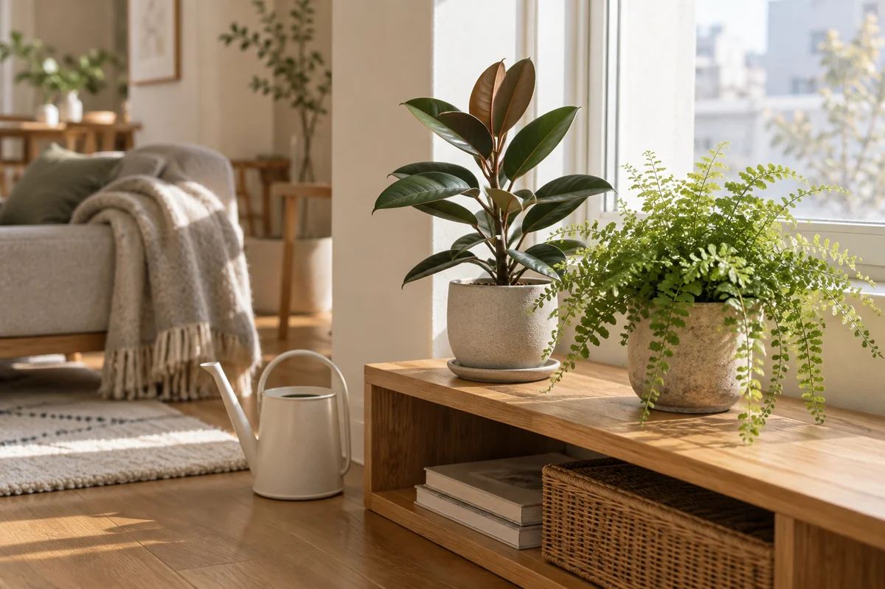

今日やることは、この3つ
- ラベルで植物名と低温への注意を確認する。
- 鉢のそばで、暖房を止めた後・朝の温度を見る。
- 葉がガラスに触れず、暖房の風も当たらない明るい位置を選ぶ。
水やりや写真を記録して変化を振り返りたい方へ。RELOHAでできることを見る ↓
① 窓際は「昼の光」と「夜の冷え」を別々に見る
冷たい窓ガラスに葉が触れることや、冷暖房からの急な温度変化は避けます。日中の見た目だけで判断せず、葉とガラスの位置関係、すきま風の有無を確認しましょう。［1］
② 夜の移動先を、先に一つ決める
| 気になる状態 | 先に確認すること |
|---|---|
| 葉が冷たいガラスに触れる | 接触を避ける位置へ。夜の鉢周辺の温度も確認。 |
| エアコンの風で葉が揺れる | 風向きや置き場所を調整し、直風を避ける。 |
| 移動先が一日中暗い | 寒さだけでなく明るさも比較する。 |
| 部屋の表示温度は暖かい | 表示場所と鉢のそばで条件が違わないか測る。 |
夜だけ移動するなら、戻す場所と移動先を決めておくと迷いません。例えば「昼は窓の手前の台、夜は同じ部屋の内側の台」とメモ。これは配置例であり、全家庭の正解ではありません。最低温度の目安は種類・品種の案内で確認してください。
③ 場所を変えたら、水やりも観察し直す
光や室温が変われば、鉢の乾き方も変わります。「冬は毎週日曜」と決めるより、用土の湿り気や持てる鉢の重さを見て判断します。［2］詳しくは冬の水やりの頻度・量・時間帯へ。

④ 写真と「夜の置き場所」を残す
記録例は「11/7 夜、窓から室内側の台へ。朝の鉢のそばは○℃。土はまだ湿っている」。水を与えなかった日も、置き場所と状態を残せば後から比べられます。
暗さが気になるときは日当たりが悪い部屋の置き場所も参考に。葉が黄色いだけで寒さと決めず、土や虫も確認しましょう。
よくある質問
冬も窓際でいい？
明るさは役立ちますが、夜の冷え、ガラスとの接触、すきま風を確認してください。窓際という名前だけでは判断できません。
窓から何cm離せば安全？
窓の断熱性や外気温、植物の種類で違います。距離の数字だけで決めず、葉の接触と鉢のそばの温度を確認します。
暖房をつけっぱなしにするべき？
まず種類に必要な温度と実際の鉢周辺の温度を確認します。暖房を使う場合も、葉へ風を直接当てない位置に置きましょう。
参考情報と編集方針
大学の園芸情報を確認し、RELOHA編集部が家庭で確認しやすい順に整理しました。種類ごとの管理条件は購入店・生産者の案内を優先してください。
- イリノイ大学：観葉植物のお世話冷たいガラス、直風、急な温度変化への注意
- メリーランド大学：冬の室内植物の問題冬の水やりと光・室温、土の湿り気の確認
出典確認日：2026年11月07日。RELOHAを運営する編集部による自社記事です。画像は実証・診断写真ではありません。海外の薬剤や気候条件をそのまま日本向けに推奨していません。